Adding Custom Songs to Taiko 3DS3
This tutorial covers adding custom songs into Taiko 3DS3 ("Dokodon! Mystery Adventure") by converting from the text-based TJA format to Namco's fumen format. This is process is very manual -- there are currently no public tools that will speed this up.
This process works by replacing existing songs in the game. As this is done via LayeredFS, the replacement can be removed at any time. Note that since song names are image files, they are not dealt with by this converter.
Before you start, please take note of a few things:
- Since you're replacing a song, this means that getting a greater score will result in the song no longer having a proper score. This is something you will not be able to fix, so it is highly recommended that you make a save backup with Checkpoint or JKSM before replacing any songs!
- Okku is incompatible with some charts and features, most notably charts with branched paths, scroll commands, and charts with over 300 bars or 13000 notes.
- Scoring and soul point calculation is pretty close to a realistic score, but it isn't anywhere near perfect. Take them with two and a half grains of salt.
- This guide only covers replacing base songs with custom ones.
Prerequisites
- A modded 3DS running a modern CFW environment
- These instructions should work on any Luma version with LayeredFS support (7.0 and greater), but anyone on older Luma versions should still update their setup to the latest.
- A digital or cartridge copy of Taiko 3DS3 ("Taiko no Tatsujin: Dokodon! Mystery Adventure")
- Your TJA file
- A computer or virtual machine running a modern version of Windows
- These instructions have been tested on Windows 10.
What you need
- The latest release of Okku
- The download link is under the "Download Here" box.
- Okku's package comes in RAR format. The 3DS is known to have issues when files are extracted with WinRAR, so using 7-zip is much preferred.
Section -1: Setting your computer locale
This section only needs to be performed once. If you have already done this, you can skip this section.
As TJA files tend to come with Japanese text, files need to be extracted with a computer set to Japanese locale, or else you will create mojibake. Naturally, this will create issues with the converter. Don't worry -- this won't change system language.
- Hit Windows key + R to open up the Run dialogue, enter
intl.cpl, then click "OK".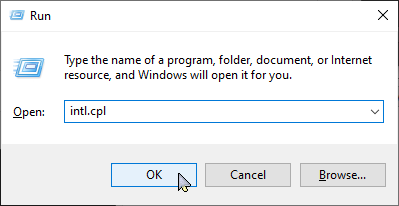
- Click on
Adminstrative, thenChange system locale. You will need Administator access on you computer to do this. 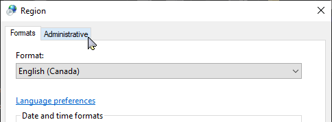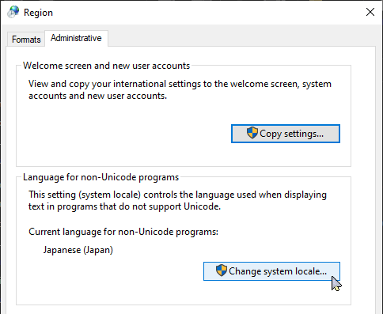
- Use the dropdown to change the system locale to
Japanese (Japan), then click OK. Ignore theUse Unicode UTF-8 for worldwide language supportcheckbox.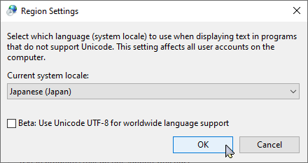
- You will be prompted to restart your computer. Click
Restart nowto restart.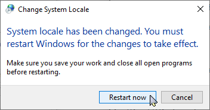
Your system's locale is now properly set.
Section 0: Enabling file extensions
For sanity's sake, file extensions should be enabled in case your file associations are weird. To do that, click "View" on any open File Explorer window, then click the checkbox for ~file name extensions`:

Section 1: Correctly encoding your TJA file
Okku requires that TJA files are encoded as UTF-8. You can do this in bulk with a tool like KanjiTranslator. This tutorial covers manually re-encoding the file with Notepad.
- Double-click to open your TJA file with Notepad.
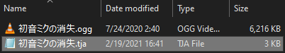
- Click
File, thenSave As.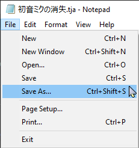
- Change the encoding to
UTF-8, then clickSave.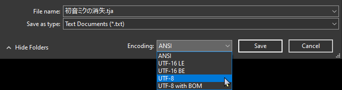
Your TJA file is now properly encoded.
Section 2: Running your TJA through Okku Converter
This section will convert your TJA file and audio into Namco's file and audio format so that it will work in a 3DS.
- Navigate to
3DSTaikoV### -> Okku, then double-click onOkku_Converter.exe. You should see a command prompt window open, followed by a File Explorer window.- If you don't, you may not have the VC Redistributable pack installed. Double-click on the
VC_redist.x86.exein the same directory and follow its installation instructions.
- If you don't, you may not have the VC Redistributable pack installed. Double-click on the
- Navigate to the location of your TJA file, select it, then click
Open.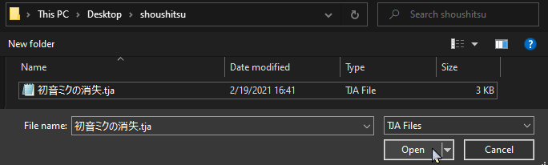
- Okku will display the song name, its subtitle, and its list of difficulties. Select the difficulty that you want converted.
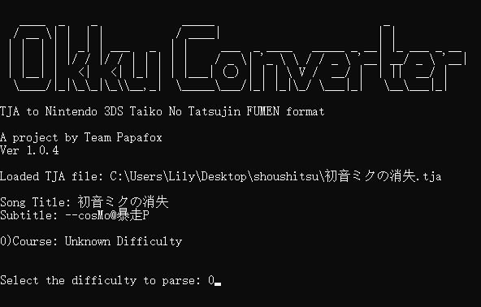
- Okku will show a few boxes, and should eventually output
Done!, indicating it has succeeded. You can close Okku at this point. The converted files will be in the same directory as the original TJA and audio file.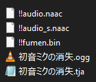
Section 3: Replacing a song with your converted file
This section will replace an existing base song in Taiko 3DS3 with your newly converted file.
- Double-click on
3ds_Folder_structure.7zinside of3DSTaikoV###and extract its contents to the root of your 3DS SD card.- The root of the SD card is the initial directory where you can see the Nintendo 3DS folder, but aren't inside of it.
- You can do this via FTP, but it'll be a lot slower as this involves transferring many small empty folders.
- On the 3DS SD, navigate to
luma -> titles -> 0004000000190E00 -> romfs -> _data -> sound -> song. - This part is the hard part: You'll have to rename your converted
NAACfiles to the name of an actual existing song. The smaller file (!!audio_s.naac) is the sample, while the larger file (!!audio.naac) is the actual song. Don't mix these up.- Namco's song IDs aren't always easy to work out, so it may be difficult to work out what you should name the file. Check the song list on wikihouse for some help. For example, ハッピーシンセサイザ (Happy Synthesizer)'s song ID is
hapsyn. That is the song I'll replace as an example. - Avoid the songs that start with
3d3, as the vast majority of them are for the story mode battles. - The format of a normal song is
<SONGID>_3ds.naacand<SONGID>_3ds_s.naac. For our example,hapsyn_3ds.naacandhapsyn_3ds_s.naac. - A number of songs add extra text that aren't in the full song ID. These songs are:
83noma,calib3,clsmrs,himyak,honnou,iachil,koiama,mscl4,namcot,rlngig,ora3x,valk,xjapa2,ymyrp2,yokait,ywjdrm: addremst-- example:83noma_remst_3ds.naacalexan,clsbut,clsw,drsb,lost1g: addremst2-- example:alexan_remst2_3ds.naacgoth: addresmt3-- example:goth_remst3_3ds.naac
- See this image for an image of all song IDs.
My song replacement looks like this: 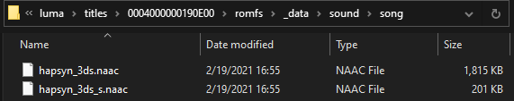
- Namco's song IDs aren't always easy to work out, so it may be difficult to work out what you should name the file. Check the song list on wikihouse for some help. For example, ハッピーシンセサイザ (Happy Synthesizer)'s song ID is
- On the 3DS SD, navigate to
luma -> titles -> 0004000000190E00 -> romfs -> _data -> fumen -> <SONG ID OF THE SONG THAT YOU REPLACED> -> solo. Rename your fumen file (!!fumen.bin) to<SONG ID>_<e/h/m/n>.bin.- e = easy/kantan, n = normal/futsuu, h = hard/muzukashii, m = extreme/oni. For our example, I'll name the file
hapsyn_m.binto replace the Happy Synthesizer's Oni chart. - Don't worry -- you don't have to worry about
remst/remst2/remst3in this section, as it does not apply.yokaitwould still beyokait_m.bin, notyokait_remst_m.bin.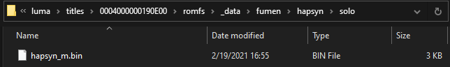
- e = easy/kantan, n = normal/futsuu, h = hard/muzukashii, m = extreme/oni. For our example, I'll name the file
- Take out your SD card and put it into your 3DS. You're finally done! Don't forget to enable game patching via the Luma configuration menu (hold SELECT on boot).
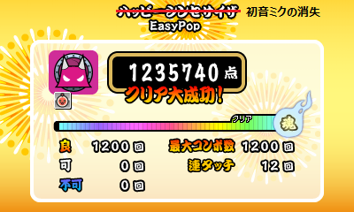
{kind=link}